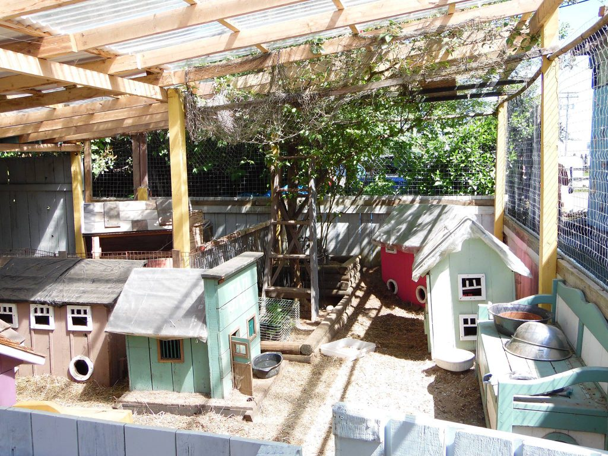
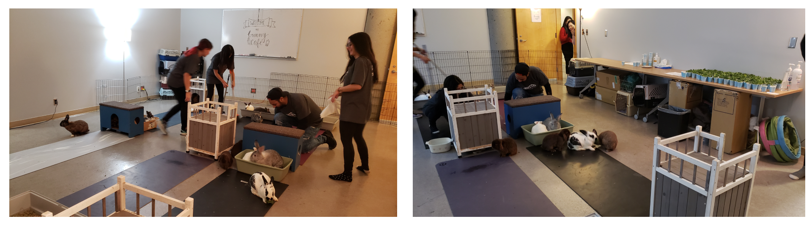
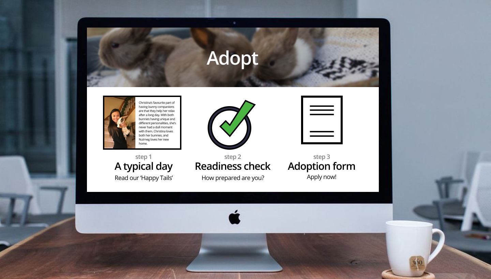
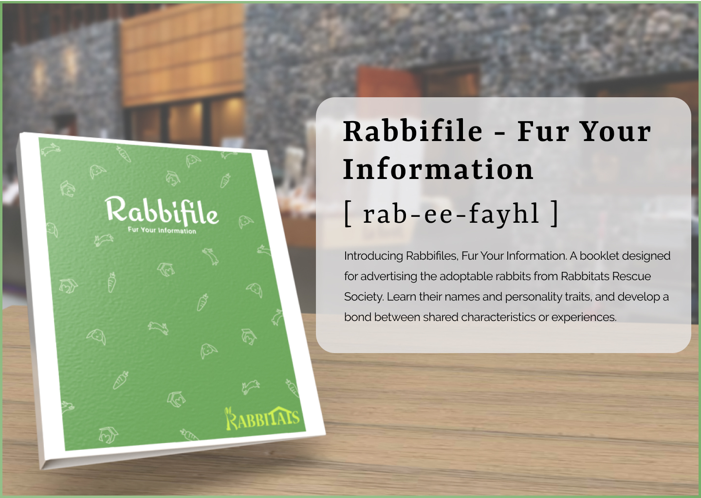
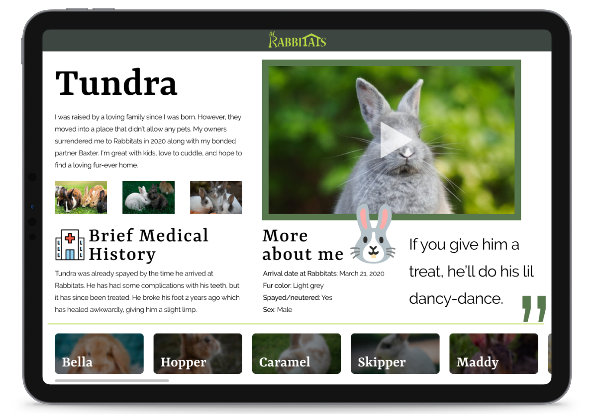

Creating safer communities, one rabbit at a time
Rabbitats Rescue Society is a volunteer-based charity group based in Richmond, BC. whose goal is to rescue feral and abandoned rabbits. Their mission statement is to trap, neuter, and contain. Abandoned pets and their feral offspring display environmentally destructive behavior such as chewing and burrowing, which negatively affects municipalities, businesses and neighbourhoods. Through the building of ‘Rabbitats’, enclosures designed to be escape proof, predator-proof, visually pleasing, gently interactive, sustainable and low maintenance, they hope to provide a safe space to rehabilitate these rabbits.
Project Overview
As part of a third year Interaction Design Methods course, my team and I was tasked with finding a local small business or volunteer organization to work with. Through consultations with our participant group, we were to come up with a design proposal that addresses a challenge the group faces.
Getting to know everybody (and every 🐰)
In order to get a better understanding of the purpose of Rabbitats and how they’re able to operate, I organized site visits to the two rabbit sanctuaries, as well as interviews with key stakeholders in the organization. We first met with Sorelle Saidman, founder and CEO, to talk with her about her motivations for starting this initiative. Our biggest takeaway from our conversation with her was that spreading awareness about the issue is one of her biggest goals in working with us. We also met with Kathy and Deanna, the respective managers of the South Surrey and Richmond Sanctuaries. At the site visits we were able to talk to them, as well as some volunteers, about the duties and responsibilities of maintaining their sites.
Some key insights we gathered:
1) The volunteer onboarding process lacks documentation.
2) Screening potential adopters/volunteers should be easier.
3) There is a lack of online presence via social media channels.
Attending a Meet n’ Treat hosted at SFU’s Burnaby Campus
Meet n’ Treats are events hosted by Rabbitats where guests are able to come play, feed, and hang out with some of the friendly and adoptable rabbits. It’s like puppy therapy, but without the drool! With all of our research gathered from the site visits, interviews, and attending some of their events, we decided to focus specifically on the Meet n’ Treat experience from the lens of an event guest. We chose to focus on Meet n’ Treat events because, while popular, didn’t engage with guests enough to substantially increase their metrics of success, such as donations or volunteer sign ups.
There was a photographer there who explained some of the bunnies I was playing with, like their names and habits. I had a better experience feeling relaxed and connected with some bunnies because I knew about them.
--Tracy L. Meet n’ Treat attendee
How Meet n' Treat works
Firstly, guests line up to receive a ticket for a specific time slot. When their turn comes, they receive a quick debrief about the organization, the rules for the event, and ways you can donate. Then, guests are free to play with and feed the rabbits.
Meet n' Treat events have 3 main goals:
1) Promote rabbitats’ brand.
2) Raise funds.
3) Increase awareness.
What we noticed
From our observations, we saw that there wasn’t a lot being done in terms of engaging with guests before or after the event. Volunteers were typically too busy with setting up or managing the ongoing sessions. From our interviews, we learnt that guests typically didn’t know about Rabbitats until this event, but knowing some information about the rabbits made the experience more comfortable.
Taking all of this information in mind, we gathered 3 main insights that helped drive our design focus. We learned that:
1) Line up time is not utilized.
2) No accessible information on adoptable rabbits.
3) Personal stories create memorable experiences.
Honing in on authentic experiences
After gathering the research, we moved onto designing authentic personas and journey maps that accurately reflected the goals, motivations, and pain points of the stakeholders we spoke with.

One feature of our persona’s that I found useful was showing their internet search history. I think that this gives a unique and interesting perspective that goes beyond just their day-to-day activities. Our professor also gave a nod to the quotes I had written, saying that they helped breathe character and a sense of realism into the personas.

Exploring potential design opportunities
After gathering all our research, insights, personas, and journey maps, the team came together to explore the different ways we could address the main issues we found. As the team’s project manager, I led the whiteboarding sessions where we discussed potential design opportunities. I led discussions, resolved conflicts, and ultimately decided which direction we were going to pursue.
Adoption page redesign
One design focus we thought about was redesigning the website’s Adoption page. From our research we found that the current adoption page lacked a clear information architecture. It was also missing a clear call-to-action, which we believe resulted in the low adoption applications Rabbitats was receiving.
Ultimately, we did not pursue this opportunity because it lacked the impact we were looking to make. Although a redesign of the Adoption page could have increased adoption applications, which in turn could have reduced the workload for the managers and volunteers, we believed that there were better alternatives that could achieve this goal and much more.
New volunteer guides
Another design opportunity we explored was addressing lack of volunteer commitment. When we interviewed volunteers, we learned that there were not any accessible resources to refer to when conducting their various tasks and duties. Since many volunteers were students, they would sometimes go 2-3 weeks in-between volunteer shifts, oftentimes forgetting the proper order of tasks, or any special dietary restrictions for certain groups of rabbits.
We decided not to move forward with this design focus because, much like the other design opportunity, felt like it was not making enough of an impact that we would want. With this proposal we would address the volunteer and manager needs of easily accessible information, but not adopter or event goer needs. However, we thought that the visuals and graphic design of this were important aspects of communicating Rabbitats’ brand, so we made sure to incorporate them in our final design focus.
Scoping in on a design focus that is impactful, realistic, and accessible
After much deliberation, we landed on a design opportunity that addressed the issues faced by our three stakeholders (managers, volunteers, and adopters), all while being something that was manageable, feasible, and impactful. We really loved the Meet n’ Treat event and felt that there was a way we could elevate the experience. By creating a more engaging event, we are building on the interactivity, personability, and memorable qualities that make this event unique, and hope to foster a positive, long-term relationship with future event guests.
Rabbifile - Fur Your Information
Rabbifile – Fur Your Information, is a booklet designed for advertising the adoptable rabbits from Rabbitats Rescue Society. You can learn their names and personality traits and develop a bond between shared characteristics or experiences.
Providing accessible information to waiting event guests.
Rabbifiles serve as a useful tool to communicate the uniqueness of each adoptable rabbit at Rabbitats. To address the goals of accessibility, Rabbifiles can be viewed before or after attending an event, either physically or online. By providing a personal story for the rabbits, we are giving them the opportunity to create a stronger emotional connection through sympathy or relatability. There is also personality information, such as their background, habits or traits, and medical history. For bonded rabbits, their partner will be clearly identifiable on their Rabbifile, so that interested individuals can find the other Rabbifile as well.
Going digital for accessibility
In regards to accessibility, we also see Rabbifiles being implemented digitally. On the Rabbitats website’s Adoption and Fostering pages, there isn’t any information about the adoptable rabbits. By incorporating our Rabbifiles online, it allows interested individuals to read through, and see which rabbits catch their attention.
The online version offers the unique capability of showing multiple photos or videos of the rabbits, and supplying any additional information that might not have fit on the physical copies. It is also easier to edit information on pages since information may get updated often once rabbits are adopted.
Managing a design project for the first time
This was the first time that I led an upper division course project, and I learned many valuable lessons about project management and how to be a better leader. I was also able to practice my communication and copywriting skills, as I was the main speaker during group presentations. Overall, this project allowed me to grow as a designer, researcher, and team leader, and I am very grateful for this experience.